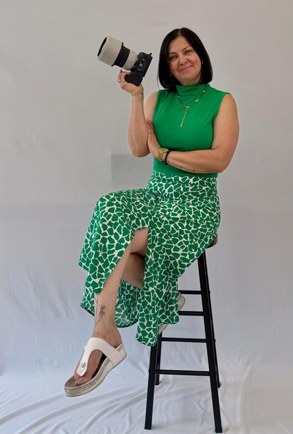

Sie starten neu.
Neue Position, neuer Lebensabschnitt oder ein neues Herzensprojekt. Jetzt ist der richtige Moment für Bilder, die zeigen, wer Sie heute sind. Authentisch, professionell und genau so, wie Sie wahrgenommen werden möchten.
Portrait · Familie · Baby · Hochzeit · Studio
Ich bin Maria, Fotografin und Videografin aus Leidenschaft. Ich liebe echte Momente, natürliche Emotionen und kreative Ideen.
Für wen ich fotografiere
Bei mir müssen Sie nicht perfekt sein. Ich möchte Sie so zeigen, wie Sie sind, mit Ihrer Persönlichkeit, Ihren Emotionen und den kleinen Momenten, die oft die schönsten Erinnerungen werden. Ganz egal, ob Familienfotos, Portraits oder Aufnahmen für Ihre Webseite: Gemeinsam schaffen wir Bilder, die sich nach Ihnen anfühlen.
Neue Position, neuer Lebensabschnitt oder ein neues Herzensprojekt. Jetzt ist der richtige Moment für Bilder, die zeigen, wer Sie heute sind. Authentisch, professionell und genau so, wie Sie wahrgenommen werden möchten.
Momente, die viel zu schnell vergehen. Ihr Kind, das sich jeden Tag verändert. Die Liebe, die Sie heute verbindet. Bilder, die nicht nur schön aussehen, sondern auch Jahre später noch etwas in Ihnen auslösen.
Die ersten Wochen vergehen schneller, als man glaubt. Kleine Hände, verschlafene Blicke und diese besondere Nähe. Genau diese Augenblicke verdienen es, für immer festgehalten zu werden.
Die Natur schafft die perfekte Kulisse, ob im Kornfeld, zwischen blühender Glyzinie oder am See zur goldenen Stunde. Wir nehmen uns Zeit für das schönste Licht und halten echte Momente fest, ganz ohne Hektik.
Nicht jedes Shooting braucht die Natur als Kulisse. In Innenräumen entstehen ruhige, zeitlose und professionelle Aufnahmen, ob für Business, Portraits oder kreative Ideen. Gemeinsam schaffen wir genau die Atmosphäre, die zu Ihnen und Ihrer Geschichte passt.

Bei mir muss niemand perfekt posieren. Wir verbringen einfach eine schöne Zeit zusammen, unterhalten uns und genießen den Moment. Genau dann entstehen die Bilder, die sich echt anfühlen und lange in Erinnerung bleiben.

01 · Leistungen
Gemeinsam finden wir die passende Lösung für Ihr Vorhaben, ob Fotografie, Videografie oder beides kombiniert. Jede Anfrage erhält ein individuelles Angebot mit einem transparenten Festpreis.
Vom Getting-ready bis zum letzten Tanz begleite ich Ihren Tag unaufdringlich. Vor dem großen Tag besprechen wir Ihre Wünsche und den Ablauf in Ruhe, damit Sie sich am Hochzeitstag ganz auf sich konzentrieren können.
Reportage · ganztagsGemeinsam schaffen wir Bilder, die Ihre Persönlichkeit zeigen, ob als Familie, Paar oder ganz für Sie allein. In entspannter Atmosphäre entstehen natürliche Aufnahmen, die Sie auch Jahre später noch gerne ansehen.
Familie · Baby · PortraitSie möchten regelmäßig sichtbar sein, haben aber weder Zeit noch Lust, ständig selbst Inhalte zu erstellen? Gemeinsam produzieren wir Fotos und Videos, die zu Ihrem Unternehmen passen, professionell, authentisch und sofort einsatzbereit für Social Media.
Reels · Shorts · Content02 · Warum Maria
Mir ist wichtig, dass Sie sich vom ersten Moment an wohlfühlen. Ohne Zeitdruck, ohne steife Posen und ohne den Anspruch, perfekt sein zu müssen. Gemeinsam schaffen wir eine entspannte Atmosphäre, in der natürliche Bilder entstehen, die wirklich zu Ihnen passen.
03 · Portfolio
Vier Themenwelten, ein Blick genügt: Klicken Sie auf eine Kategorie, um alle Bilder dazu zu sehen, oder gleich auf das gesamte Portfolio.
Sie haben eine Idee? Erzählen Sie mir davon. Gemeinsam finden wir heraus, ob und wie wir sie umsetzen können.
Ich wollte einfach mal wieder aktuelle Bilder von mir haben, ohne stundenlanges Gedöns. Das Shooting mit Maria war unkompliziert, die Auswahl danach hat Spaß gemacht, und ich habe jetzt Fotos, die ich tatsächlich verwende, nicht nur welche, die in einem Ordner verschwinden.
Anastasia R. · Portraitshooting

05 · Über mich
Fotografie und Videografie sind meine Leidenschaft. Ich liebe es, besondere Momente festzuhalten und Erinnerungen zu schaffen, die auch Jahre später noch ein Lächeln ins Gesicht zaubern.
Ich bin ein kreativer Mensch, offen für neue Ideen und experimentiere gerne. Ob klassisch, natürlich oder auch mal etwas Außergewöhnliches, jedes Shooting ist einzigartig. Dabei setze ich nicht nur meine eigenen Ideen um, sondern freue mich auch darauf, die Wünsche und Vorstellungen meiner Kundinnen und Kunden gemeinsam Wirklichkeit werden zu lassen.
Die schönsten Erinnerungen entstehen gemeinsam, lasst sie uns festhalten.
· Maria07 · Häufige Fragen
Jedes Shooting ist anders. Deshalb erhalten Sie nach unserem kostenlosen Erstgespräch ein individuelles Festpreisangebot. Darin ist genau aufgeführt, welche Leistungen enthalten sind, transparent und ohne versteckte Kosten.
In der Regel finden wir innerhalb von zwei Wochen einen passenden Termin. Bei Hochzeiten empfiehlt sich eine frühzeitige Anfrage, damit Ihr Wunschtermin noch frei ist.
Nach dem Shooting erhalten Sie zeitnah eine Auswahl Ihrer Bilder. Die fertigen Aufnahmen stelle ich Ihnen anschließend professionell bearbeitet zur Verfügung. Sollten Sie einzelne Bilder besonders dringend benötigen, sprechen Sie mich einfach an.
Indoor arbeite ich mit professioneller Beleuchtung und einem schlichten Hintergrund. Outdoor fotografieren wir in der Natur oder an einem Ort Ihrer Wahl. Auf Wunsch komme ich auch zu Ihnen nach Hause oder an Ihre Wunschlocation. Gemeinsam entscheiden wir, was am besten zu Ihrem Shooting passt.
Ja, das ist der Normalfall, nicht die Ausnahme. Wir starten mit ein paar Aufnahmen zum Warmwerden, die niemand sehen muss. Ich gebe klare, einfache Ansagen zu Haltung und Blick, damit Sie nicht raten müssen. Damit sind Sie nicht allein. Den meisten meiner Kundinnen und Kunden geht es am Anfang genauso.
08 · Kontakt
Zwei Sätze reichen: Was haben Sie vor, und bis wann brauchen Sie das Ergebnis? Ich melde mich werktags so schnell wie möglich mit einer ehrlichen Einschätzung und einem passenden Vorschlag für Ihr Vorhaben.


{kind=link}